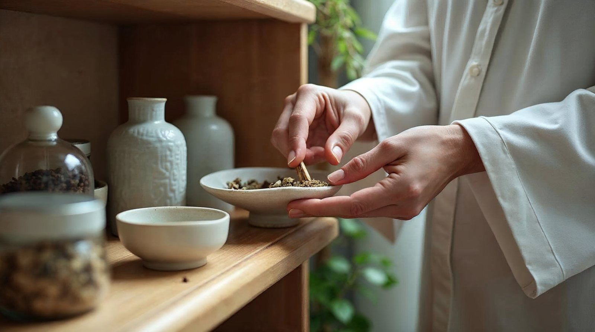

이종호 한의사 감수좋은꿈참사랑한의원 대표원장 (한의사 면허번호 19769)발행 2026-11-22 · 수정 2026-11-26
이 글의 차례
당이 걱정된다고 과일을 모두 끊을 필요는 대부분 없습니다. 주스 대신 생과일로, 한 번에 한두 조각씩, 식사의 일부로 먹는 방법을 먼저 권합니다. 다만 당뇨약이나 인슐린을 쓰고 있다면 과일 양과 먹는 시간을 처방한 의사와 함께 정해야 합니다.
왜 과일도 양과 먹는 방법을 살펴야 할까요
- 과일에는 자연에서 온 당과 함께 식이섬유와 비타민이 들어 있습니다.
- 주스로 짜 마시면 식이섬유가 많이 걸러지고 씹는 과정도 없어 당이 더 빨리 흡수되는 것으로 알려져 있습니다.
- 말린 과일은 부피가 작아 생각보다 많은 양을 먹게 되기 쉽습니다.
- 과일을 간식처럼 하루에 여러 번 먹으면 전체 당 섭취가 쌓일 수 있습니다.
자주 하는 오해
- 과일은 자연식품이라 얼마든지 먹어도 괜찮다고 여기기 쉽지만, 과일에도 당이 들어 있어 양과 횟수가 쌓이면 전체 당 섭취가 늘 수 있습니다.
- 단맛이 덜한 과일은 많이 먹어도 된다고 생각하기 쉽지만, 맛만으로 당의 양을 가늠하기는 어렵습니다. 종류보다 한 번에 먹는 양을 먼저 정하는 편이 실용적입니다.
- 채소 주스나 과일 스무디는 건강 음료라 괜찮다고 여기는 분이 많지만, 갈아 마시면 짧은 시간에 많은 양을 마시게 되기 쉽습니다.
- 당이 걱정되면 과일을 완전히 끊어야 한다고 생각하기 쉽지만, 대부분은 먹는 방법을 바꾸는 것부터 시작해도 충분합니다.
예를 들면 이런 경우입니다
- 예를 들어 저녁을 먹고 텔레비전을 보며 귤을 대여섯 개씩 까먹는 직장인이라면, 귤을 끊기보다 저녁 식사 끝에 두 개쯤 덜어 먹고 나머지 상자는 손이 바로 닿지 않는 곳에 두는 것부터 해 봅니다.
- 예를 들어 바쁜 아침을 과일 주스 한 잔으로 대신하는 분이라면, 주스 대신 사과 반쪽에 달걀이나 두유처럼 단백질이 있는 음식을 곁들여 아침을 조금 더 든든하게 바꿔 봅니다.
- 예를 들어 건강을 챙긴다며 말린 과일과 견과류를 하루 종일 조금씩 집어 드시는 어르신이라면, 하루 먹을 양을 아침에 작은 그릇에 한 번만 덜어 두는 방법이 양을 가늠하는 데 도움이 됩니다.
먼저 이렇게 여쭙니다
- 하루에 과일을 언제, 얼마나 드시나요?
- 주스나 말린 과일을 자주 드시나요?
- 최근 건강검진에서 공복 혈당이나 당화혈색소 이야기를 들었나요?
- 당뇨약이나 인슐린을 쓰고 계신가요?
스스로 점검해 보세요
- 과일로 식사를 대신하는 날이 일주일에 두세 번 이상 있다
- 과일 주스나 과일 맛 음료를 거의 매일 마신다
- 말린 과일을 봉지째 두고 먹는다
- 저녁 식사 뒤 밤늦게 과일을 먹는 습관이 있다
- 과일을 먹고 한두 시간 안에 다시 배가 고프거나 단것이 당긴다
- 최근 검진에서 공복혈당이나 당화혈색소가 높다는 말을 들었다
해당하는 항목이 여럿이라면 진료 때 말씀해 주시면 상담이 쉬워집니다.
일상에서 먼저 해 볼 수 있는 것
- 주스보다 생과일로, 한 번에 한두 조각 정도
- 과일만 따로 간식으로 먹기보다 식사 중이나 식사 뒤에 조금
- 말린 과일은 작은 접시에 덜어 양을 정해 두기
- 간식이 필요할 때 과일과 함께 채소나 견과류 조금 곁들이기
- 일주일 동안 과일 먹은 시간과 양을 적어 보기
과일을 고를 때는 한 번에 먹을 양을 손바닥 크기쯤으로 정해 두면 따로 무게를 재지 않아도 가늠하기 쉽습니다. 사과나 배처럼 큰 과일은 미리 잘라 한 번 먹을 만큼만 접시에 담고, 남은 것은 바로 냉장고에 넣어 두세요.
식사 뒤 바로 과일을 먹고 싶다면 밥 양을 조금 줄이는 식으로 한 끼 전체의 양을 맞춰 보는 것도 방법입니다. 다만 당뇨약이나 인슐린을 쓰는 분은 밥 양을 바꾸기 전에 처방한 의사와 먼저 상의해 주세요.
얼마나 지켜보고, 언제 바로 확인할까요
과일 먹는 방법을 바꾼 뒤에는 2~4주쯤 같은 방식으로 지켜보며 식후 나른함과 단것이 당기는 정도가 어떻게 달라지는지 적어 보세요. 당화혈색소는 지난 몇 달의 평균을 보여 주는 수치로 알려져 있어, 며칠 만에 달라지기를 기대하기보다 다음 검진이나 재검 때 비교하는 편이 현실적입니다.
반면 며칠 사이 갈증과 소변이 부쩍 늘고 체중이 이유 없이 빠진다면 지켜보지 말고 바로 내과에서 확인하세요. 당뇨약이나 인슐린을 쓰는 중에 식은땀·손 떨림·어지럼이 생기면 저혈당일 수 있으니, 처방한 의사에게 안내받은 방법대로 바로 대처하세요.

한의원에서 함께 살필 수 있는 경우
- 단것이 자꾸 당기고 먹는 양을 조절하기 어려운 경우 식사 리듬과 식욕의 흐름을 함께 살핍니다.
- 식후 나른함이 심하고 몸이 무거운 경우 식사 간격과 활동량을 함께 봅니다.
- 스트레스로 간식을 찾고 자책이 드는 경우 식욕과 감정, 수면이 이어지는 모습을 함께 살핍니다.
좋은꿈참사랑한의원에서는 먼저 식사와 간식의 흐름을 듣고, 필요하다고 판단될 때 당화혈색소 같은 항목이나 인바디 770 체성분을 확인합니다. 진맥·설진으로 살핀 뒤 상태에 맞춰 생활 관리와 한약 상담 등을 정하며, 진단과 약 조절은 내과 등 담당 의료기관에서 합니다.
처음 오시면 데스크에서 기본 정보를 적고, 제가 식사와 간식, 잠, 배변의 흐름과 복용 중인 약을 차례로 여쭙습니다. 이어서 진맥을 짚고 필요하다고 판단될 때 설진을 더하며, 가져오신 검진 결과지가 있으면 함께 봅니다.
그날은 과일 먹는 시간이나 간식 바꾸기처럼 바로 해 볼 수 있는 한두 가지를 정리해 드리고, 다음 진료에서 그사이 어땠는지 이어서 여쭙습니다.
이렇게 기록해 오시면 상담이 쉬워집니다
- 일주일 동안 먹은 과일의 종류, 양, 시간
- 주스·단 음료를 마신 날
- 최근 건강검진의 공복 혈당과 당화혈색소 수치
- 복용 중인 당뇨약과 복용 시간
기록은 사진으로 남겨도 충분합니다. 과일을 먹기 전 접시를 한 장씩 찍어 두면 양과 시간이 함께 남아, 일주일 뒤 휴대전화 앨범만 넘겨 보아도 언제 얼마나 드셨는지 한눈에 볼 수 있습니다. 검진 결과지는 날짜 순서대로 모아 오시면 이전 수치와 비교하기 쉽습니다.
이런 증상은 먼저 확인이 필요합니다
- 당뇨약이나 인슐린을 쓰고 있는 경우(과일 양과 시간, 식사량 조절을 처방한 의사와 상의하세요)
- 갈증과 소변량이 부쩍 늘고 체중이 줄어드는 경우
이런 신호가 있으면 한의원보다 가까운 병원이나 응급실을 먼저 찾으세요.
함께 읽으면 좋은 글
- 당화혈색소(HbA1c) 수치는 무엇을 뜻하나요?
- 오후만 되면 간식이 당기는 이유는 무엇인가요?
- 야식 대신 배가 고플 때 먹을 수 있는 것은 무엇인가요?

여쭙는 것
- 하루에 과일을 언제, 얼마나 드시나요?
- 주스나 말린 과일을 자주 드시나요?
- 최근 건강검진에서 공복 혈당이나 당화혈색소 이야기를 들었나요?
생활에서 해 볼 것
- 주스보다 생과일로, 한 번에 한두 조각 정도
- 과일만 따로 간식으로 먹기보다 식사 중이나 식사 뒤에 조금
- 말린 과일은 작은 접시에 덜어 양을 정해 두기
한의원에서 함께 살필 것
- 단것이 자꾸 당기고 먹는 양을 조절하기 어려운 경우 식사 리듬과 식욕의 흐름을 함께…
- 식후 나른함이 심하고 몸이 무거운 경우 식사 간격과 활동량을 함께 봅니다.
- 스트레스로 간식을 찾고 자책이 드는 경우 식욕과 감정, 수면이 이어지는 모습을 함께…
먼저 확인이 필요한 신호
- 당뇨약이나 인슐린을 쓰고 있는 경우(과일 양과 시간, 식사량 조절을 처방한 의사와…
- 갈증과 소변량이 부쩍 늘고 체중이 줄어드는 경우
한눈에 보는 표
| 구분 | 핵심 |
|---|---|
| 여쭙는 것 | 하루에 과일을 언제, 얼마나 드시나요? 주스나 말린 과일을 자주 드시나요? |
| 생활에서 해 볼 것 | 주스보다 생과일로, 한 번에 한두 조각 정도 과일만 따로 간식으로 먹기보다 식사 중이나 식사 뒤에 조금 |
| 한의원에서 함께 살필 것 | 단것이 자꾸 당기고 먹는 양을 조절하기 어려운 경우 식사 리듬과 식욕의 흐름을 함께 살핍니다. 식후 나른함이 심하고 몸이 무거운 경우 식사 간격과 활동량을 함께 봅니다. |
| 먼저 확인이 필요한 신호 | 당뇨약이나 인슐린을 쓰고 있는 경우(과일 양과 시간, 식사량 조절을 처방한 의사와 상의하세요) 갈증과 소변량이 부쩍 늘고 체중이 줄어드는 경우 |
자주 묻는 질문
과일을 끊어야 하나요?
대부분의 경우 끊을 필요는 없습니다. 양과 먹는 방법을 조절하는 것이 도움이 될 수 있습니다.
주스는 괜찮나요?
주스는 당이 빨리 흡수될 수 있어 가능하면 생과일로 드시기를 권합니다.
당뇨약을 먹고 있어요.
약은 임의로 조절하지 말고, 과일을 얼마나 먹을지 처방한 의사와 상의하세요.
귤이나 포도처럼 작은 과일은 얼마나 먹으면 되나요?
작은 과일은 개수가 쉽게 늘어나니, 한 번 먹을 만큼을 미리 접시에 덜어 두고 그만큼만 드시는 방법을 권합니다.
좋은꿈참사랑한의원은 재진 때 지난번 이야기부터 이어서 여쭙니다. 진료시간과 예약은 오시는 길에서 확인하세요.
어디서 상담받을 수 있나요?
좋은꿈참사랑한의원은 서울 동작구 만양로2길 2 신성빌딩 3층·5층(서울 동작구 상도동, 7호선 상도역 3번 출구 근처)에 있습니다. 한의사 3명(이종호 대표원장, 조영기 수석진료원장, 정원영 진료원장)이 진료합니다. 진료시간은 평일 09:30~20:00(점심 13:00~14:00), 토·일·공휴일 09:30~15:00이며, 방문 전 전화로 확인을 권합니다. 예약은 네이버 예약, 카카오톡 상담, 전화 02-815-7510로 받습니다.
이 글은 일반적인 건강 정보이며 개인의 진단이나 치료를 대신하지 않습니다. 증상이 있거나 복용 중인 약이 있다면 진료를 통해 확인하세요. 치료 효과는 개인마다 다를 수 있습니다.
작성 기준: 일반적으로 알려져 있는 건강 정보를 참고해 정리했습니다(대표원장 감수). 증상 기록은 1~2주 동안 하루 1회, 비슷한 시간에 적어 오시면 지난 상태와 비교하기 쉽습니다.